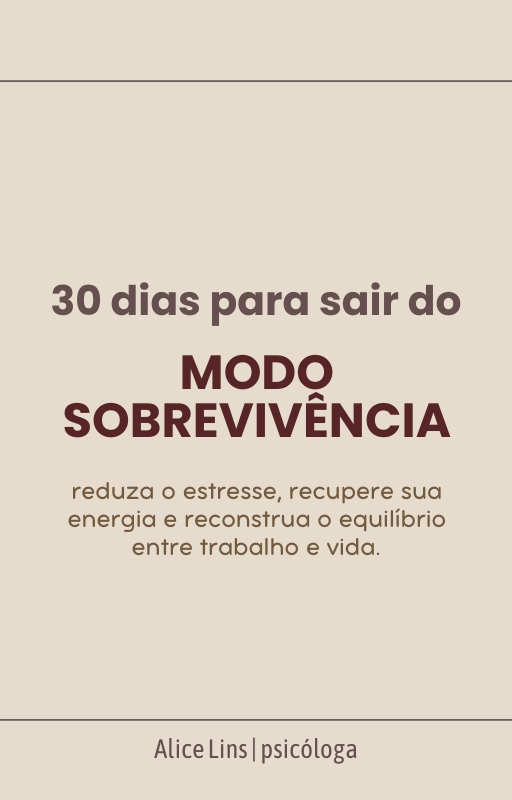
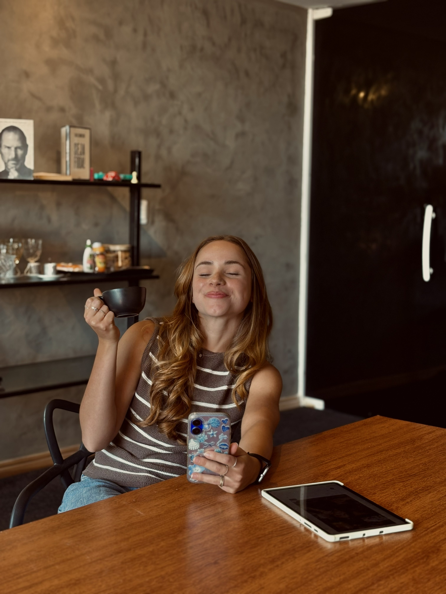

Perceber
Observe seus sinais de estresse, seus hábitos e o que tem consumido sua energia.
Workbook • Programa de 30 dias
Você não precisa esperar chegar ao limite para começar a olhar para o próprio bem-estar. Um percurso prático de 30 dias para reconhecer seus padrões, rever sua relação com o trabalho e construir uma rotina mais sustentável, um passo de cada vez.
Quero conhecer o workbookNo seu ritmo, com atividades práticas e espaço para reflexão.

Talvez você se reconheça
Nem sempre é fácil perceber quando a rotina deixou de ser sustentável. Às vezes, os sinais aparecem aos poucos e a gente se acostuma a funcionar no limite.
Uma jornada em quatro fases
O workbook organiza pequenas atividades ao longo de um mês. A proposta não é adicionar mais uma cobrança à sua rotina, mas criar momentos possíveis de observação e mudança.
Observe seus sinais de estresse, seus hábitos e o que tem consumido sua energia.
Experimente pausas e práticas de atenção às próprias necessidades, sem buscar perfeição.
Reflita sobre pensamentos, limites e escolhas que influenciam sua relação com o trabalho.
Identifique o que deseja manter e prepare estratégias para lidar com períodos difíceis.
O que você vai encontrar
O conteúdo combina psicoeducação e exercícios de autopercepção para ajudar você a acompanhar a própria experiência ao longo dos 30 dias.
Atividades diárias acompanhadas de conteúdos psicoeducativos inspirados em conceitos da Terapia Cognitivo-Comportamental (TCC).
Uma ferramenta para registrar, no início e no fim do percurso, sua percepção de energia, sono, foco e satisfação com a vida, em uma escala de 0 a 10.
Seis páginas de apoio com mapa de estressores, mapa de energia, declaração de limites pessoais, radar de sinais de alerta e plano “Se… Então…”.
Comece com um passo possível
Conheça o workbook Mentalidade Desacelerada e percorra as atividades de 30 dias no seu ritmo, com mais atenção aos seus limites e ao que importa para você.
Quero começar minha jornadaVocê será direcionado ao ambiente de checkout da Eduzz.

Quem preparou este material
Este workbook foi desenvolvido por Alice Lins como um recurso psicoeducativo para apoiar a reflexão sobre estresse, limites e relação com o trabalho. A proposta é oferecer um percurso organizado e acolhedor, com atividades que possam ser adaptadas à realidade de cada pessoa.
Saiba mais sobre AliceEste material possui caráter psicoeducativo e de autodesenvolvimento, não substituindo o acompanhamento psicológico ou médico especializado. As experiências e os resultados variam de pessoa para pessoa; o workbook não promete resultados específicos nem constitui tratamento individualizado.